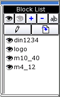
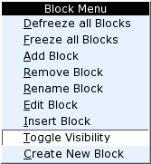
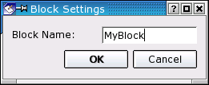

|
||
 |
||


12 Blocks
Blocks are named groups of entities which can be inserted into a drawing multiple times with different attributes at different locations. Such an inserted instance of a block is called an Insert .

Figure 17: Block list.
Changing the Visibility of a Block
Double-click on a block in the block list to toggle it's visibility. Alternatively, you can right-click on it and choose "Toggle Visibility" from the context menu (Figure 18).

Figure 18: Context menu of the block list.
Changing the Visibility of all Blocks
Toolbar:
Menu:
Block - Defreeze All
Block - Freeze All
Description:
The two buttons shown above can be used to defreeze or freeze all blocks at once. The same function is also available from the context menu.
Adding New Blocks
Toolbar:
Menu:
Block - Add Block
Description:
This command creates a new empty block. The block dialog is shown where you can specify the name for the new block (Figure 19). If you want to create a block from existing entities, please use the "Create Block" command instead.

Figure 19: Dialog for creating new blocks.
Removing Blocks
Toolbar:
Menu:
Block - Remove Block
Description:
Removes the active block. Please note that this action cannot be undone. The block and all inserts of the block will be deleted.
Renaming Blocks
Toolbar:
Menu:
Block - Rename Block
Description:
Renames the active block. The same dialog is presented as for creating new blocks (Figure 19). Please note that this action cannot be automatically undone. The block and all inserts of the block will be renamed.
Editing Blocks
Toolbar:
Menu:
Block - Edit Block
Description:
This command opens the active block in a new document window where it can be modified just like any other drawing. To update the inserts that exist inside your drawing, simply activate the drawing window either by using the Windows menu or by clicking in it.
Inserting Blocks
Toolbar:
Menu:
Block - Insert Block
Command:
?
Options Toolbar:
Description:
Inserts the active block into the drawing.
Procedure:
- Choose the block you want to insert from the list.
- Click the insert button or choose 'Insert Block' from the menu.
- Enter the rotation angle and scaling factor for the insert in the options toolbar.
- To create an array of inserts, enter the number of columns and rows in the options toolbar and specify the column and row spacing.
Creating Blocks from Existing Entities
Toolbar:
Menu:
Block - Create Block
Command:
?
Description:
Creates a block from existing entities.
Procedure:
- Select the entities you want to use for the block.
- Click the right arrow button in the CAD toolbar to continue.
- Set the reference point of the block using the mouse or enter a co-ordinate in the command line.
- Enter a name for the new block in the dialog that is shown (Figure 19) and click OK.
The block is now added to the block list and can be inserted into the drawing. The entities you selected in step 1 are removed and replaced by an insert of the block. If you don't want that you can use 'undo' to delete that insert. To restore the original entities, use 'undo' again. The undo / redo functions have no influence on the blocks themselves. Once a block is created it won't be removed again with undo.
|